JS Slick 슬라이드 라이브러리
참고 :: https://github.com/kenwheeler/slick
웹 페이지를 구성함에 있어 슬라이드의 사용은 아주 빈번하다. 특히나 비주얼 영억, 이벤트/기획전 페이지에서 많이 사용하게 되는데 슬라이드를 구현할때 자주 사용되는 플러그인중 하나인 'Slick' 에 대한 내용을 담았다. Slick은 Swiper 플러그인과 비교를 필연적으로 하게된다. 둘 다 훌륭한 플러그인 이라는건 확실하며, 특정 상황과 퍼포먼스 등 여러 요인에서 같은 사이트라도 동시에 사용 되는 경우도 있다. Slick은 Swiper 보다 옵션 종류는 적지만, 사용법과 구성이 비교적 간단하다. 또한 Jquery 기반의 플러그인으로 Jquery를 필수로 한다.
기본 HTML 태그 형태는 위의 이미지 형태이며, 여러 옵션으로 추가 태그 생성 및 도트,화살표관리 등 동적 표현이 가능하다.
■ 주로 사용하는 옵션
-
- slidesToShow : num,
화면에 보여질 슬라이드 숫자
1.25 같은 소수로도 사용 가능하다. 기본값 : 1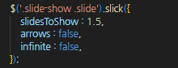 -
- slidesToScroll : num,
슬라이드시 넘어갈 유닛 숫자
1.25 같은 소수로도 사용 가능하다. 기본값 : 1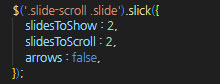 -
- dots : boolean,
페이지네이션 (도트)
도트는 CSS로 변형 가능하다. 기본값 : false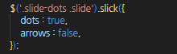 -
- arrows : boolean,
좌우 제어 버튼 (화살표)
화살표는 CSS로 변형 가능하다. 기본값 : true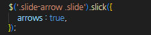 -
- infinite : boolean,
무한반복 유무 기본값 : true
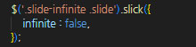 -
- fade : boolean,
fadeInOut - 서서히 나타나고, 사라지는 효과 기본값 : false
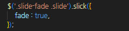 -
- speed : num,
속도 제어
1000 = 1s 기본값 : 300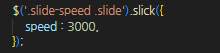 -
- autoplay : boolean,
자동 재생 제어 기본값 : false
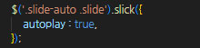 -
- autoplaySpeed : num,
자동 재생 시간 제어 기본값 : 3000
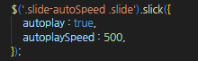 -
- pauseOnHover : boolean,
마우스 hover시 일시정지 유무
autoplay 옵션을 사용할 경우 쓰인다. 기본값 : true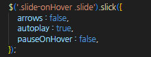 -
- pauseOnFocus : boolean,
해당 slide에 포커싱 되었을시 일시정지 유무
autoplay 옵션을 사용할 경우 쓰이며, 포커스가 풀리면 다시 재생된다. 기본값 : true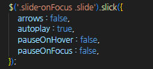
■ 추가 옵션 --- 사용 가능 및 편의성 위주
-
- swipe : boolean,
스와이프 (마우스 드래그, 터치 드래그) 제어
비주얼 영역 및 도트/화살표로 제어되는 슬라이드에서 사용하는 경우가 있다. 기본값 : true -
- draggable : boolean,
마우스 드래그 효과 제어
모바일은 터치 이벤트로 인식하기 때문에 해당이 안된다. 기본값 : true -
- touchMove : boolean,
터치에 따른 슬라이드 움직임 제어 기본값 : true
-
- touchThreshold : num,
swiper 하여 슬라이드를 전환시 요소 넓이를 1 / touchThreshold 이상 슬라이드하여 전환
예제에는 2로 반영해두었는데 그럴 경우 1 / 2 로 설정되어 50% 이상 swiper시 슬라이드 모션 기본값 : 5 -
- pauseOnDotsHover : boolean,
슬라이드 페이지네이션(도트) hover 일시정지 유무 기본값 : false
-
- centerMode : boolean,
중앙 슬라이드 활성화 : slideToShow 짝수일 경우 비활성화 기본값 : false
-
- centerPadding : num,
센터 패딩 제어 :: 센터 모드시 제어 가능 기본값 : 50
-
- adaptiveHeight : boolean,
높이값이 다른 슬라이드를 현재 활성화된 슬라이드에 맞춤 기본값 : false
-
- cssEase : string,
css easing 효과 커스터마이징 기본값 : 'ease'
-
- mobileFirst : boolean,
mobile 일때 responsive 제어
breakpoint를 기준으로
mobileFirst : false - 창 너비가 breakpoint보다 작은지 여부를 결정
mobileFirst : true - 창 너비가 breakpoint보다 큰지 여부를 결정
기본값 : false -
- initialSlide : num,
처음 보여지는 unit 설정 - 0 에서부터 index 기본값 : 0
-
- waitForAnimate : boolean,
애니메이션 활성화시 동작 제어
jQuery의 stop와 유사한 기능 기본값 : true -
- dotsClass : string,
도트 부모 ul class 제어 기본값 : 'slick-dots'
-
- rtl : boolean,
슬라이드 제어 방향을 오른쪽에서 왼쪽으로 기본값 : false
-
- useCSS : boolean,
CSS Transitions 활성화/비활성화 기본값 : true
-
- useTransform : boolean,
CSS Transforms 활성화/비활성화 기본값 : true
-
- vertical : boolean,
세로(수직 )방향 슬라이드 기본값 : false
-
- verticalSwiping : boolean,
수평인 스와이프 방향을 변경 - true값일 경우 수직으로 변경 기본값 : false
-
- responsive : object,
반응형 제어 : breakpoint - 반응형 구간, settings - 구간에 따른 설정 기본값 : none
-
- asNavFor : string,
동기화 - 2개 이상 제어시 사용 기본값 : null
-
- edgeFriction : integer,
슬라이드 가장자리를 넘길때의 저항값 지정 기본값 : 0.15
■ 이벤트, 메소드 - 주로 사용하는 옵션 위주